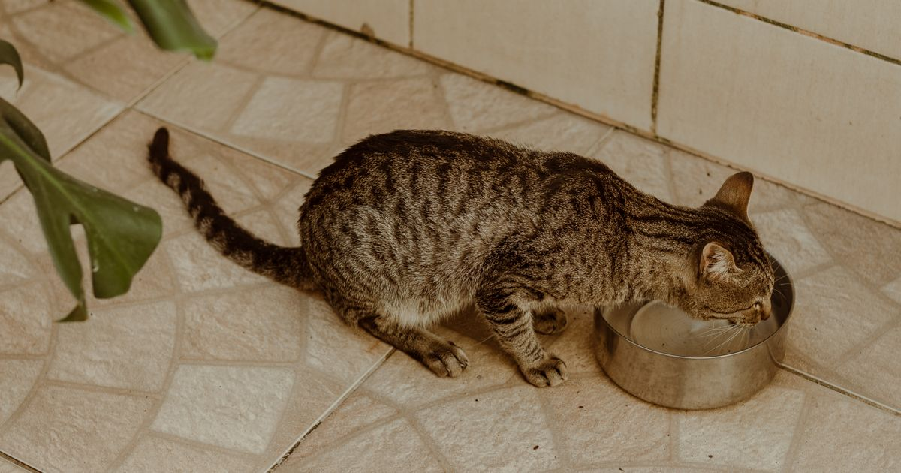

Inox e cerâmica são os dois materiais mais recomendados para bebedouros de gato, ambos superam o plástico em higiene. A escolha entre eles depende mais da sua prioridade, praticidade ou estabilidade, do que de uma diferença real de qualidade da água entregue ao seu gato.
Key Takeaways
- O aço inox é resistente a manchas e bactérias, fácil de limpar e não libera substâncias na água (Loja Gato e Vida, retrieved 2026-08-20).
- A cerâmica esmaltada tem superfície lisa e não porosa, o que dificulta a proliferação de bactérias quando bem higienizada (ND Mais, retrieved 2026-08-20).
- Cerâmica é mais pesada e estável (reduz derramamento) e conserva melhor a temperatura da água.
- Plástico é desaconselhado por reter odores e arranhar com facilidade, criando pontos de acúmulo de bactérias.
- Para gatos com bigodes sensíveis, ambos os materiais são preferíveis ao plástico, que costuma ser apontado como gatilho de fadiga de bigode em tigelas fundas.
Resumo em uma linha: Inox vence em praticidade de limpeza e leveza; cerâmica vence em estabilidade e conservação de temperatura. Os dois empatam em higiene quando bem cuidados.
Escolha inox se: você prioriza limpeza rápida no dia a dia, resistência a quedas e não se importa com o material esquentando ou esfriando junto com o ambiente.
Escolha cerâmica se: seu gato costuma derrubar o bebedouro, você quer água mais fresca por mais tempo, e você tem cuidado para não derrubar a peça durante a limpeza.
melhor bebedouro automático para pet
O aço inoxidável resiste a manchas e ao acúmulo de bactérias, é fácil de higienizar no dia a dia e dura muitos anos sem degradar. É a escolha mais recomendada quando praticidade de limpeza é a prioridade, já que basta água e sabão neutro (ou uma passada rápida na esponja) para remover resíduos de saliva, ração e biofilme que se formam na superfície com o uso diário.
Outro ponto a favor do inox é o peso reduzido em comparação com a cerâmica, o que facilita o transporte do bebedouro até a pia para lavagem completa. Em compensação, essa leveza também é o principal ponto fraco do material: gatos maiores ou mais afoitos na hora de beber podem empurrar ou virar um bebedouro de inox com mais facilidade do que um de cerâmica, especialmente em modelos sem base antiderrapante.
Não muito bem. Por ser um bom condutor térmico, o inox tende a acompanhar a temperatura ambiente rapidamente, então a água esquenta mais rápido em dias quentes e esfria mais rápido em dias frios, na comparação direta com a cerâmica. Isso não compromete a segurança da água, mas pode reduzir o apelo do bebedouro em climas mais quentes, quando o gato tende a preferir água fresca.
A cerâmica esmaltada, quando bem mantida, oferece excelente higiene graças à superfície lisa e não porosa. Também é mais pesada, o que reduz o risco de o próprio gato virar o bebedouro, e conserva melhor a temperatura da água, mantendo-a fresca por mais tempo do que um recipiente de inox no mesmo ambiente.
O ponto de atenção com a cerâmica está no esmalte: se a peça sofrer uma lascadura ou trinca, a parte exposta do material se torna porosa e passa a reter bactérias e odores, revertendo boa parte da vantagem higiênica do material. Por isso, vale inspecionar a peça periodicamente e substituir o bebedouro se notar rachaduras, mesmo pequenas, na superfície esmaltada.
Depende do uso. Para quedas no chão, sim, a cerâmica quebra com mais facilidade do que o inox. Mas no uso normal, apoiada em uma superfície estável, o peso da cerâmica na verdade reduz o risco de acidentes, porque o bebedouro não desliza nem vira com facilidade quando o gato bebe ou brinca por perto. O maior risco de dano costuma acontecer durante o transporte para a pia na hora da limpeza, então vale segurar a peça com as duas mãos nesse momento.
| Critério | Inox | Cerâmica |
|---|---|---|
| Facilidade de limpeza | Muito alta | Alta (se bem esmaltada) |
| Durabilidade | Muito alta | Alta, mas quebrável |
| Estabilidade (não vira) | Média | Alta (mais pesada) |
| Conservação de temperatura | Baixa | Alta |
| Retenção de odor | Muito baixa | Baixa |
Bebedouros de plástico arranham com o uso, criando microrranhuras onde bactérias se acumulam mesmo após a limpeza, por isso costumam reter odor e ser desaconselhados em comparação a inox e cerâmica (CSA Jardins, retrieved 2026-08-20). Além do acúmulo de bactérias, o plástico também é apontado por alguns comportamentalistas como possível gatilho de desconforto para gatos com bigodes sensíveis, já que tigelas plásticas fundas obrigam o animal a pressionar os bigodes contra a borda repetidamente durante a bebida.
Se você já tem um bebedouro de plástico e quer fazer a transição, não é preciso trocar de uma vez: pode ser mais prático substituir primeiro o recipiente de água (de uso mais frequente) por inox ou cerâmica, e trocar o comedouro de ração depois, conforme o orçamento permitir.
A decisão fica mais simples quando você parte do comportamento do seu gato, não apenas da preferência estética. Gatos que bebem com pressa, empurram a tigela ou têm o hábito de brincar perto do bebedouro se beneficiam do peso extra da cerâmica, que reduz derramamento e board de água pelo chão. Já em casas com crianças, outros pets maiores circulando por perto, ou em cozinhas movimentadas onde o bebedouro pode ser derrubado acidentalmente, o inox costuma ser mais seguro por não estilhaçar como a cerâmica em caso de queda.
Vale considerar também a rotina de limpeza. Se você prefere lavar o bebedouro rapidamente todo dia, o inox seca mais rápido e não tem esmalte para se preocupar. Se prefere uma limpeza mais espaçada, a cerâmica esmaltada de qualidade mantém a superfície lisa por mais tempo, desde que não sofra impactos.
Essa é uma decisão independente do material. Fontes com bomba d'água, disponíveis tanto em inox quanto em cerâmica, estimulam gatos que preferem água em movimento, um comportamento associado ao instinto de evitar fontes de água parada, historicamente ligadas a maior risco de contaminação na natureza. Já a tigela parada tradicional é mais simples de manter e não depende de energia elétrica, o que pode ser preferível para quem tem poucos gatos e já garante trocas de água frequentes ao longo do dia.
Esta comparação foi construída cruzando informações de fabricantes e lojistas especializados em produtos pet, orientações de comportamento felino sobre preferência por água corrente e fadiga de bigode, e boas práticas de higienização recomendadas para recipientes de uso diário de animais domésticos. Não se trata de um teste laboratorial de contagem bacteriana entre os materiais, mas de uma síntese de fontes públicas e específicas sobre o tema, para ajudar na decisão de compra. Veja nossa política editorial e de afiliados para entender como avaliamos e selecionamos produtos.
Os dois são equivalentes em higiene quando bem cuidados. O inox resiste naturalmente a bactérias e não precisa de esmalte para ficar liso; a cerâmica esmaltada também tem superfície não porosa, mas só mantém a higiene se o esmalte estiver intacto, sem trincas ou lascas.
É mais frágil que o inox em caso de queda, mas o peso maior da cerâmica reduz justamente o risco de o gato derrubar o bebedouro durante o uso normal. O maior risco de quebra costuma acontecer na limpeza ou no transporte, não durante a bebida do gato.
O ideal é higienizar o reservatório e trocar a água a cada 2 ou 3 dias, e fazer uma limpeza mais completa, incluindo o filtro e a bomba, uma vez por semana. Isso vale tanto para inox quanto para cerâmica, já que resíduos de ração, saliva e pelos se acumulam nos dois materiais com o tempo.
Para muitos gatos, sim. A água corrente estimula a ingestão, já que gatos costumam preferir água em movimento por instinto de evitar fontes paradas, associadas a maior risco de contaminação na natureza. Isso ajuda na prevenção de problemas urinários, mas o material do recipiente (inox ou cerâmica) continua sendo decisão independente do tipo de fonte.
Se a prioridade é praticidade de limpeza diária e resistência a quedas, inox é a escolha mais segura. Se você prioriza estabilidade e conservação de temperatura, a cerâmica esmaltada de boa qualidade é equivalente em higiene e ganha nesses dois pontos. Na dúvida, observe o comportamento do seu gato: um animal mais afoito ou que já derrubou bebedouros antes tende a se dar melhor com cerâmica; quem prioriza limpeza rápida e não se importa com o peso menor, com inox.
melhor bebedouro automático para pet · comedouro x bebedouro automático: qual a diferença
Escrito pela Equipe Smart Pet Gadgets. Veja nossa política editorial e como verificamos as fontes citadas neste artigo.
🐾 Confira o preço e a disponibilidade atual no Mercado Livre.
Ver no Mercado Livre →Link de afiliado: podemos receber uma comissão por compras feitas através deste link, sem custo adicional para você.
Nildo Alves — curadoria de produtos pet no Smart Pet Gadgets. Testa e pesquisa produtos para cães e gatos, cruzando especificações de fabricante com boas práticas veterinárias e dados de mercado.
Sobre o Smart Pet Gadgets · Contato · Política editorial e de afiliados